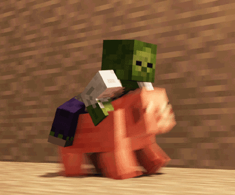

페토라는 블로거의
지금까지의 블로그 주제들
블로그 주제들

저의 첫번째 주제는 마인크래프트입니다. 마인크래프트라는 주제는 제가 그때까지 마인크래프트를 즐겨했고 모드를 즐겨 찾아봤습니다. 생각외로 즐겁더라구요
블로그 활동도 즐거웠지만 제가 올린글을 누가 본다는게 그렇게 신기할수가ㅋㅋㅋㅋ
그러다가 블로그에는 제가 아는 사이트가 유명하지 않더라구요.그래서 시작하게 되었습니다.
모드와 맵등 최근 마크블로거들이 했던것대로 했었죠. 제가 할때는 그렇게 하는 사람들이 적어서 금방 유명해질수있었어요.(투데이기준) 큼... 너무 자기 자랑만했군요.. 그러다가 너무 빨리 유명해지다보니 욕심이 컸나봐요. 그래서 금방 접었습니다. 그러다가 몇번의 블접을 했었던것같습니다.
적어도...3번?
아마 첫 닉네임은 'REWorld'일겁니다. 하지만 저의 변덕으로 몇번 접게 되었고
마지막 닉네임은 'RE월드'이였습니다.
모드와 맵등 최근 마크블로거들이 했던것대로 했었죠. 제가 할때는 그렇게 하는 사람들이 적어서 금방 유명해질수있었어요.(투데이기준) 큼... 너무 자기 자랑만했군요.. 그러다가 너무 빨리 유명해지다보니 욕심이 컸나봐요. 그래서 금방 접었습니다. 그러다가 몇번의 블접을 했었던것같습니다.
적어도...3번?
아마 첫 닉네임은 'REWorld'일겁니다. 하지만 저의 변덕으로 몇번 접게 되었고
마지막 닉네임은 'RE월드'이였습니다.
 저의 두번째 주제는
저의 두번째 주제는